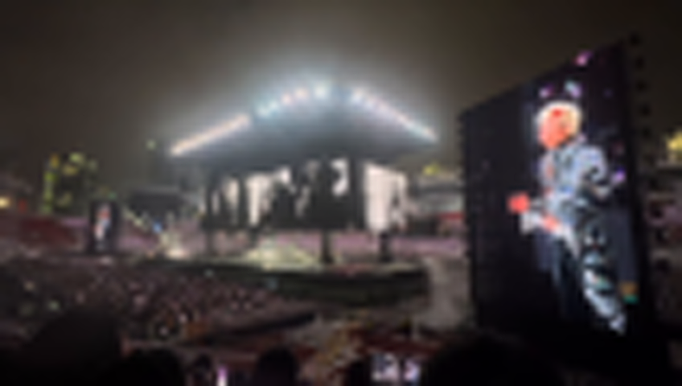
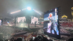
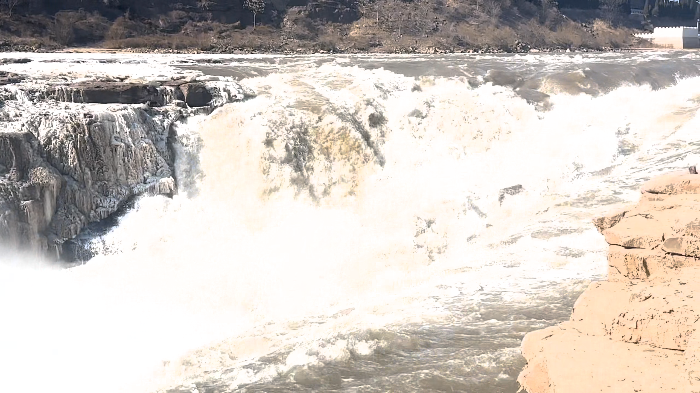

Show 1
Long real-motion GT clip
BasicVSR result pending
BasicVSR++ result pending
FocusVSR result pending
AIAA3201 Video Super-Resolution Project
Uncertainty-aware selective refinement for 4x video super-resolution
Video Testbed
These two clips are treated as GT references for the live demo. The LR videos below are generated from the GT clips using a 4x spatial downsampling pipeline, then displayed at the same size so the loss of texture is easy to inspect.
Future super-resolution outputs can be dropped into the reserved file slots without redesigning this page.
Show 1
Show 2
Project Idea
Video super-resolution is not uniformly difficult across a frame. Large structural regions can be reconstructed reliably by a strong recurrent model, while specular highlights, text, water, screens, and fast motion often remain ambiguous. FocusVSR treats that ambiguity as a routing signal instead of applying the same refinement everywhere.
The current prototype keeps BasicVSR++ as the stable reconstruction path and adds a conservative refinement layer for high-frequency regions. The goal is to improve local perceptual detail without sacrificing the temporal stability and distortion metrics that make BasicVSR++ a strong baseline.
Method
Input frames are degraded to the target 4x VSR setting and processed as a temporal sequence.
Bidirectional propagation recovers a stable full-frame reconstruction and preserves global structure.
Residual cues, local detail energy, and temporal disagreement highlight regions that are likely under-restored.
The refinement branch is applied only to uncertain high-frequency areas, then blended back into the backbone output.
Flat backgrounds, rigid edges, and well-aligned structures stay close to the BasicVSR++ output to protect PSNR, SSIM, and temporal smoothness.
Text, lighting, crowd texture, water spray, and screen content receive more aggressive local refinement where perceptual errors are easiest to notice.
Qualitative Results

The stage frame contains saturated light, thin screen boundaries, and repeated audience details. These are exactly the regions where a focus map can prevent full-frame over-processing and concentrate refinement where ambiguity is visible.

Handheld footage introduces glare, haze, and compression artifacts. The page keeps this sample because it reflects the kind of practical video users actually want to enhance.

Water and spray are difficult for pixel-aligned losses because many plausible details can match the same LR observation. This motivates reporting perceptual and temporal metrics alongside PSNR and SSIM.
Experiment Design
Vimeo-style paired clips for controlled 4x evaluation, plus REDS and real mobile samples for motion, lighting, and compression stress tests.
Bicubic interpolation, BasicVSR, and BasicVSR++ define the distortion-oriented reference points for the FocusVSR refinement layer.
PSNR and SSIM track fidelity; LPIPS and temporal consistency checks help reveal whether local refinement creates more believable detail.
Threshold strength, focus-map source, blend ratio, and refinement branch depth show how selective processing changes quality and stability.
Final CSV results are pending. The page currently reports the experiment design, qualitative samples, and evaluation protocol while the quantitative run is being finalized.
Final CSV results are pending. The page currently reports the experiment design, qualitative samples, and evaluation protocol while the quantitative run is being finalized.
Current Takeaway
Our working hypothesis is that BasicVSR++ remains the most reliable global reconstruction path for PSNR and SSIM. FocusVSR is designed as an interpretable add-on: it identifies where the baseline is least confident and spends extra modeling capacity there.